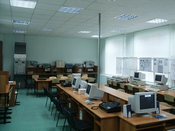

Кафедра информационной безопасности

Кафедра передачи дискретных сообщений организована в 1965 году. В 2009 году кафедра ПДС была реорганизована в кафедру «Мультисервисные сети и информационная безопасность». На кафедре ведется преподавание по следующим дисциплинам:
- Основы построения телекоммуникационных систем и сетей
- Проектирование локальных вычислительных сетей
- Основы технологии сети Интернет
- Системный анализ передачи данных
- Системы документальной электросвязи
- Проектирование мультисервисных сетей передачи данных
- Средства обеспечения информационной безопасности в сетях передачи данных
- Системы и сети передачи дискретных сообщений
- Основы передачи дискретных сообщений
- Основы информационной безопасности
- Передача дискретных сообщений
- Теория и техника документальной электросвязи
- Криптографические протоколы
- Основы организационно-правового обеспечения информационной безопасности
- Модемы в сетях передачи данных
- Современные модемы
- Сети ДЭС
Кафедру возглавляет доктор технических наук, профессор В.Г. Карташевский. Профессор В.Г. Карташевский — автор свыше 150 работ, в числе которых 40 журнальных статей, 25 авторских свидетельств и патентов, 3 монографии и 2 учебных пособия.
На кафедре преподают высококвалифицированные специалисты:
- докторы технических наук, профессоры В.Г. Карташевский, Б. Я. Лихтциндер;
- доценты, кандидаты технических наук В. П. Зайкин, А. В. Крыжановский, Н. В. Киреева, В. В. Пугин, А. Ю. Криштофович, А.С. Раков;
- доцент Т.В. Фирстова;
- старший преподаватель, кандидат технических наук И.С. Поздняк;
- старшие преподаватели М.А. Буранова, А.И. Моисеев;
- ассистенты Л. С. Шередько, Н. М. Татаринова, Н.И. Козырева.
Сотрудники кафедры ведут научные исследования в области диагностики электронной аппаратуры, являются авторами многих книг и научных статей.